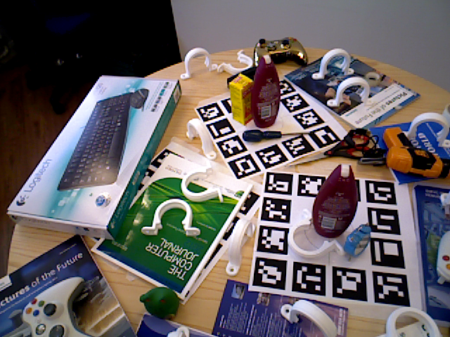
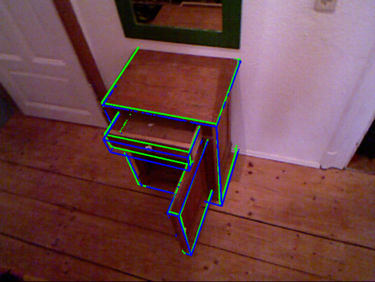
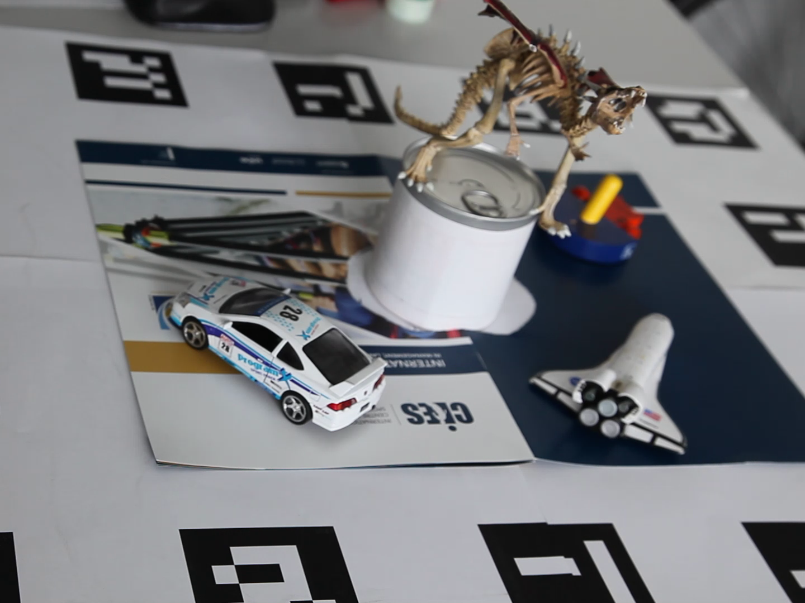
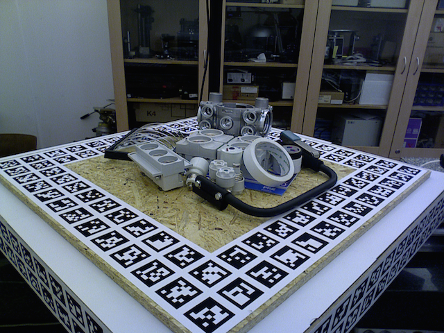
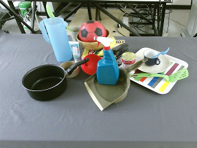

Extended Abstracts | |
|
We invite submissions of extended abstracts of ongoing or already published work. Authors are given the opportunity to promote their work to an extended audience in all areas covered by the workshop, including, but not limited to: | |
|
|
|
|
Extended abstracts are limited to two pages. Authors are free to use any format available, e.g. the ICCV 2015 word or LaTex templates tar or zip. | |
|
The submission must be sent to iccv.3dpose.2015@gmail.com no later than 15 November 2015. (If you want your information to be included in the ICCV program, the deadline is strict 15 October). |
|
Challenges | |
Following the success and popularity of other challenges in object detection in 2D images, we want to establish a new challenge (comprised of 4 sub-challenges) in the area of 6 DoF object detection, which, to our knowledge, is the first of each kind. Each challenge will include and gradually be enriched with numerous test scenes and objects, including their 3D models. You can apply your method to our data and submit your results. We will evaluate submitted results according to multiple metrics and display the scores for comparison. For more information please visit the respective website of the individual challenge. | |
Challenge #1Imperial College London  |
Challenge #2TU Dresden  |
Challenge #3TU Graz & EPFL  3D Rigid Tracking from RGB Images Challenge |
Challenge #4Czech Tech. University  T-LESS Textureless Object Challenge |
Challenge #5University of Birmingham  Highly Occluded Object Challenge |